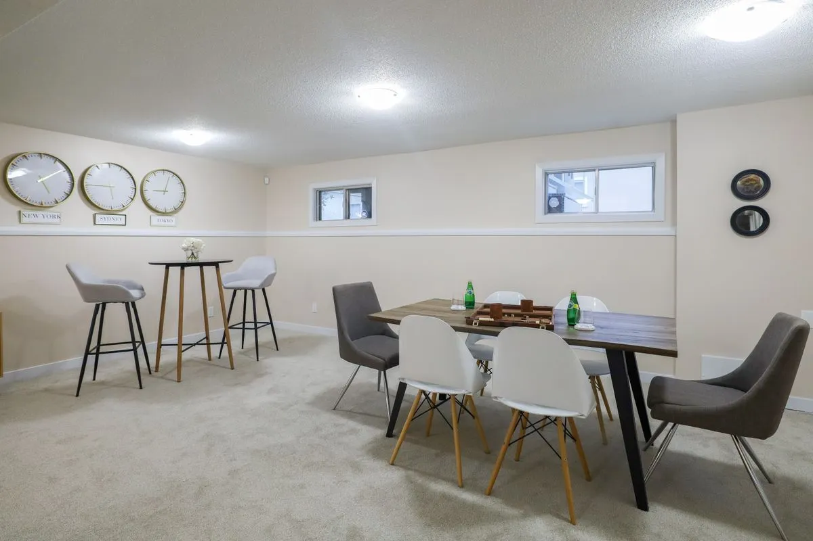

By Reno Rise. Published September 19, 2026. Last updated September 19, 2026. General planning information, not legal or engineering advice.

A finished basement is extra living space for your own household. A legal secondary suite is a separate, self-contained home inside your house, with its own kitchen and bathroom, created with a building permit and built to the rules for a second unit. That is the short answer. The long answer is where your money lives.
Here is the part that surprises people. The two can look identical the day the drywall goes up. A kettle, a bed and a second-hand fridge do not make a suite. Your fridge does not file paperwork.
What is the difference between a finished basement and a legal suite?
Toronto’s zoning by-law describes a secondary suite as self-contained living accommodation with private food-preparation and sanitary facilities, located within and subordinate to the main dwelling. Finishing a basement does none of that by itself. It just makes the space nicer.
| Finished basement | Legal secondary suite | |
|---|---|---|
| Who lives there | Your household | Tenants or family in a separate unit |
| Kitchen | Optional | Part of the definition of a suite |
| Permit | Depends on the work. Structural, plumbing or heating changes usually need one. | Toronto Building requires one to add a second dwelling unit |
| Fire separation and exits | General safety | Specific separation, exit and alarm requirements for two units |
| Drawings | Sometimes | Usually prepared by a qualified designer or engineer |
Why does the difference matter?
Because most renovation problems are not sudden. They are ignored. “It’s just finishing” is the basement version of “it’s just cosmetic,” and cosmetic is the most dangerous word in renovations. It is how a rental plan quietly turns into a legal problem.
- A finished basement does not become a legal apartment because someone lives in it. Legality depends on zoning, permits, inspections and code compliance.
- Building a basement without a suite in mind can make a later conversion harder, for example if the ceiling assembly, exits or drains were never planned for it.
- Toronto Fire Services has flagged concerns with two-unit houses that skipped required City review. See its basement apartment fire safety page.
Renting out an unauthorized unit can expose an owner to enforcement and safety risks. Nobody wants to learn that from a tenant, an inspector or an insurance adjuster.
Which one should you plan for?
Here is the direction. If you want space for your own family, start with basement renovation planning. If rental income or a home for extended family is on the table, start with the legal secondary suite guide. If you are undecided, plan so that a suite stays possible: measure the ceiling height, think about exits and windows, and note where plumbing could go.
That one afternoon of planning is the difference between a basement that keeps its options open and one that needs to be torn apart later. Future you will appreciate it. Future you is already tired.
When you do not need a suite project
If the goal is a comfortable family room, a suite project adds cost and paperwork you do not need. A dry, tall-enough basement that needs walls, flooring and light is a finishing job. See basement finishing, and skip the drama.
What to do next
Decide which project you actually want, then ask each professional how they would handle permits, drawings and inspections for it. If you would like Reno Rise to review your basement details, use the form below. It asks for the basics and takes a few minutes.
General information, not legal or engineering advice. Confirm your project with Toronto Building and a qualified designer or contractor. Reno Rise does not issue permits or give code advice.
Frequently asked questions
Is a finished basement the same as a legal basement apartment?
No. A finished basement is extra living space for your household. A legal basement apartment is a separate, self-contained unit created with a building permit and built to Building Code and Fire Code requirements for a second unit.
Can I turn a finished basement into a legal secondary suite later?
Often yes, but it is easier if the basement was planned for it. Ceiling height, exits, fire separation and drain locations all matter, and Toronto Building requires a permit to add a second dwelling unit.
Does a basement need a kitchen to be a legal suite?
A secondary suite is self-contained living accommodation with its own kitchen and bathroom facilities, so yes, a kitchen and a bathroom are part of the definition.
Do I need a permit to finish a basement in Toronto?
It depends on the work. Toronto Building says permits are needed for structural or material changes, new plumbing or heating work, underpinning, a new basement entrance, and adding a second dwelling unit.
Request a Basement Assessment
Share a few details about your basement and your plans. Reno Rise reviews what you send and, where there is a suitable fit, may connect you with an independent professional. This does not confirm an appointment, a quote, an approval or a match.